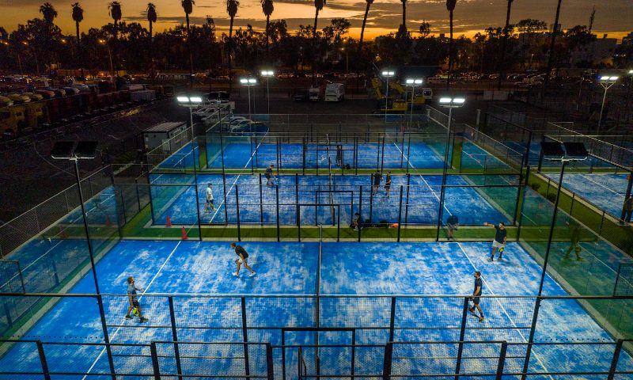
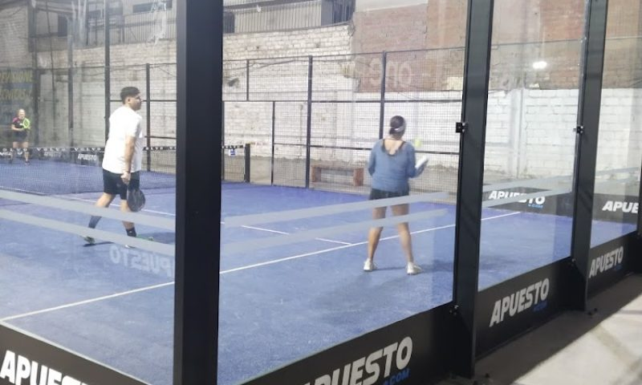
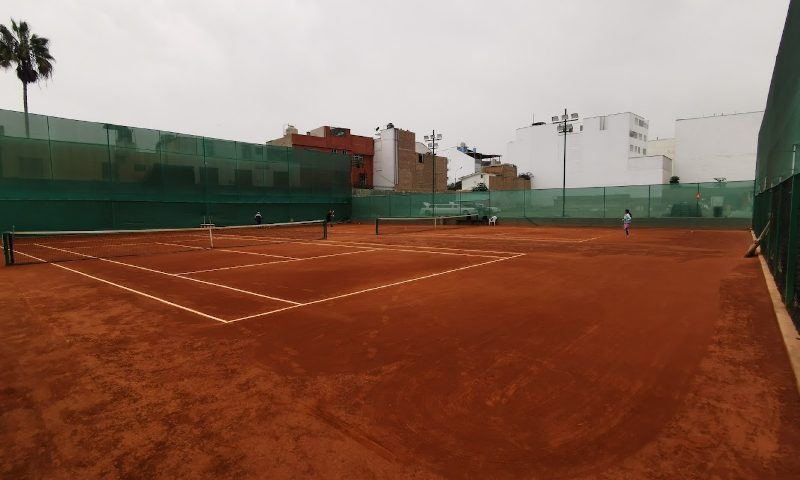
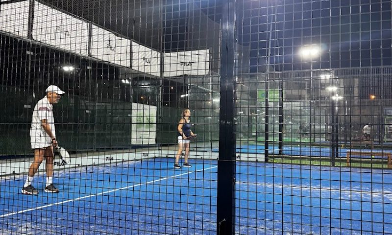
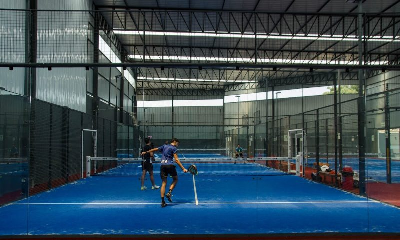
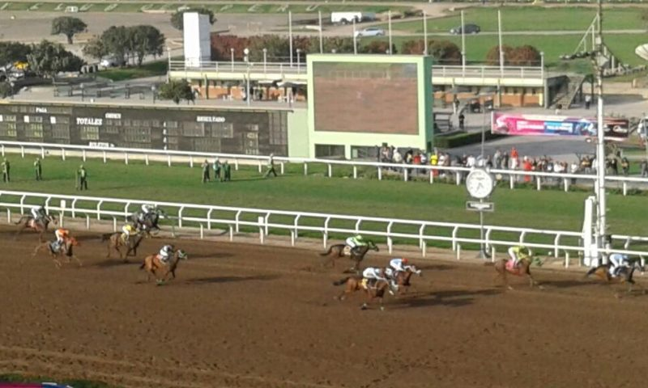
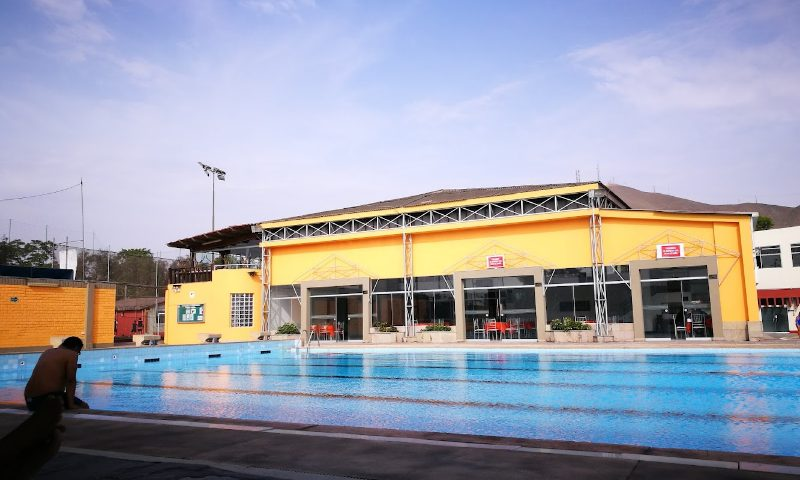
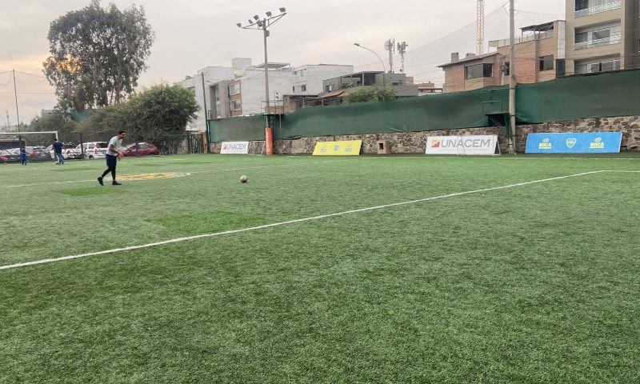

Foto: Google MapsIGMA Padel Center
BloqueadaSantiago de Surco
igmapadel-pe.matchpoint.com.es · @igmapadel
¿Eres el club? Actualiza tus datosDirectorio por distrito
10 canchas de pádel en Santiago de Surco con dirección, horario, tarifa estimada y contacto directo. Si no vives en Santiago de Surco, mira también el directorio completo de Lima o el catálogo filtrado e interactivo de Santiago de Surco, con reseñas, mapa y calificaciones.

Foto: Google MapsSantiago de Surco
igmapadel-pe.matchpoint.com.es · @igmapadel
¿Eres el club? Actualiza tus datos
Foto: Google MapsSantiago de Surco
onepadel-pe.matchpoint.com.es · @onepadel.pe
¿Eres el club? Actualiza tus datosSantiago de Surco
eurekasports.pe · @eureka_sportsoficial
¿Eres el club? Actualiza tus datos
Foto: Google Maps
Foto: Google MapsSantiago de Surco
onepadel-pe.matchpoint.com.es · @onepadel.pe
¿Eres el club? Actualiza tus datos
Foto: Google MapsSantiago de Surco
Reservas Mad Padel · @madpadelperu
¿Eres el club? Actualiza tus datos
Foto: Google Maps
Foto: Google MapsSantiago de Surco
clubpetroperu.com.pe · @clubpetroperuoficial
¿Eres el club? Actualiza tus datos
Foto: Google MapsEstas son las canchas de pádel que registramos en Santiago de Surco, con la dirección, el horario de atención y una tarifa estimada por hora de cada club — confirma siempre precio y disponibilidad real directo con el club antes de ir, porque esta información es pública y puede cambiar. Si no encuentras cancha disponible en Santiago de Surco, el directorio completo de Lima tiene más de 30 opciones en otros distritos, y en academiadepadel.pe dictamos clases de pádel para adolescentes y adultos, con clase de prueba y pala incluida.
En academiadepadel.pe enseñamos pádel a adolescentes y adultos en grupos reducidos, con clase de prueba disponible.
Quiero mi clase de prueba